<div id="gauge-container" class="hidden-on-narrow">
    <div id="km">km/h</div>
    <div id="rpm">x1000 RPM</div>
    
    
    <div id="time">{{now | date:'h:mm a'}}</div>
    <div id="airTemp">{{carData.air_temp}} ℃</div>
    <div id="airHum">Air humidity: {{carData.air_humidity}}%</div>
    <div>
        <kendo-radialgauge class="kmH" #radial [transitions]="true"
            [pointer]="{ value: carData.speed, cap: { size: 0.02, color: '#001540'},length: 1, color: '#0080FF' }"
            [scale]="{ max: 260 }">
            <kendo-radialgauge-scale [labels]="{font:'27px Ubuntu'}"
                [majorTicks]="{width: 4, size: 20, visible: true, color: '#FFFFFF'}"
                [minorTicks]="{width: 2, size: 16, visible: true, color: '#FFFFFF'}" [majorUnit]="30" [minorUnit]="15"
                [max]="270" [startAngle]=-50 [endAngle]=230>
                <kendo-radialgauge-scale-labels color='#FFFFFF'>
                </kendo-radialgauge-scale-labels>
            </kendo-radialgauge-scale>
        </kendo-radialgauge>
    </div>
    <div>
        <kendo-radialgauge class="rpm" #radial [transitions]="true"
            [pointer]="{ value: carData.rpm, cap: { size: 0.02, color: '#001540'},length: 1, color: '#0080FF' }"
            [scale]="{ max: 260 }">
            <kendo-radialgauge-scale [rangeSize]=5 [labels]="{font:'27px Ubuntu', color: '#FFFFFF'}" [majorUnit]="1"
                [minorUnit]="0.5" [min]="0" [max]="6"
                [majorTicks]="{width: 4, size: 20, visible: true, color: '#FFFFFF'}"
                [minorTicks]="{width: 2, size: 16, visible: true, color: '#FFFFFF'}" [startAngle]=-45 [endAngle]=120>
                <kendo-radialgauge-scale-ranges>
                    <kendo-radialgauge-scale-range [from]="0" [to]="4" color="none">
                    </kendo-radialgauge-scale-range>
                    <kendo-radialgauge-scale-range [from]="4" [to]="5" color="#ffc700">
                    </kendo-radialgauge-scale-range>
                    <kendo-radialgauge-scale-range [from]="5" [to]="6" color="#c20000">
                    </kendo-radialgauge-scale-range>
                </kendo-radialgauge-scale-ranges>
            </kendo-radialgauge-scale>
        </kendo-radialgauge>
    </div>
    <div>
        <kendo-radialgauge class="fuel" #radial [transitions]="true"
            [pointer]="{ value: carData.fuel, cap: { size: 0.02, color: '#001540'}, color: '#0080FF' }" [scale]="{ max: 1 }">
            <kendo-radialgauge-scale [labels]="{font:'20px Ubuntu', color: '#FFFFFF'}" [minorUnit]="0.25" [majorUnit]="0.5"
                [majorTicks]="{width: 3, size: 10, visible: true, color: '#FFFFFF'}"
                [minorTicks]="{size: 2, size: 10, visible: true, color: '#FFFFFF'}" [min]="0" [max]="1" [startAngle]=135
                [endAngle]=225>
                <kendo-radialgauge-scale-labels color='#FFFFFF'>
                </kendo-radialgauge-scale-labels>
                <kendo-radialgauge-scale-ranges>
                    <kendo-radialgauge-scale-range [from]="0" [to]="0.1" color="#c20000">
                    </kendo-radialgauge-scale-range>
                    <kendo-radialgauge-scale-range [from]="0.11" [to]="0.5" color="none">
                    </kendo-radialgauge-scale-range>
                    <kendo-radialgauge-scale-range [from]="0.51" [to]="1" color="none">
                    </kendo-radialgauge-scale-range>
                </kendo-radialgauge-scale-ranges>
            </kendo-radialgauge-scale>
        </kendo-radialgauge>
    </div>
    <div>
        <kendo-radialgauge class="water-temperature" #radial [transitions]="true"
            [pointer]="{ value: carData.engine_temp, cap: { size: 0.02, color: '#001540'}, color: '#0080FF' }" [scale]="{ max: 120 }">
            <kendo-radialgauge-scale [labels]="{font:'20px Ubuntu', color: '#FFFFFF'}" [minorUnit]="10" [majorUnit]="30"
            [majorTicks]="{width: 3, size: 10, visible: true, color: '#FFFFFF'}"
            [minorTicks]="{size: 2, size: 10, visible: true, color: '#FFFFFF'}" [min]="60" [max]="120" [startAngle]=225
                [endAngle]=315>
                <kendo-radialgauge-scale-labels color='#FFFFFF'>
                </kendo-radialgauge-scale-labels>
                <kendo-radialgauge-scale-ranges>
                    <kendo-radialgauge-scale-range [from]="60" [to]="110" color="none">
                    </kendo-radialgauge-scale-range>
                    <kendo-radialgauge-scale-range [from]="110" [to]="120" color="#c20000">
                    </kendo-radialgauge-scale-range>
                </kendo-radialgauge-scale-ranges>
            </kendo-radialgauge-scale>
        </kendo-radialgauge>
    </div>
</div>

<div class="responsive-message"></div>